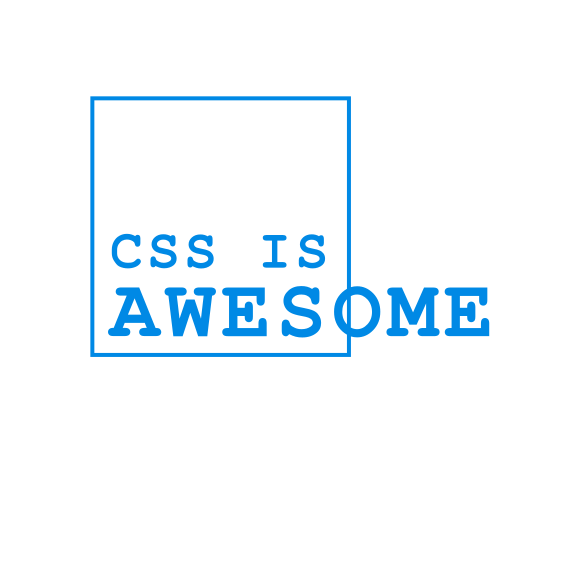

Agenda
WIP
# Our Playground for Today --- ## Exercise Repo ```sh $ git clone https://github.com/tklepzig/css-workshop-exercise ``` ```sh $ cd css-workshop-exercise ``` ```sh $ npm i ``` ```sh $ npm run dev ``` --- ## Using Tailwind - `input.css` - Tailwind Directives - `output.css` - Final CSS - Our design tokens are available --- Only used classes are generated during build ```jsx const Blubb = () => <h1 className="mt-1 pt-1">Headline</h1>; ``` ```[] // output.css .mt-1 { margin-top: 0.25rem; } .pt-1 { padding-top: 0.25rem; } ``` --- → Never built a classname with variables ```[]jsx const token = "2"; const Blubb = () => <h1 className={`mb-${token} mt-1`}>Headline</h1>; ``` ```[] // output.css .mt-1 { margin-top: 0.25rem; } ``` --- ## Specificity - Besides the order of definition, specificity defines which CSS rule wins - Specificity Order: Inline > Id > Class > Element - `!important` overwrites everything, should be avoided --- With only single class rules, order of definition decides who wins, never the `className` string ```jsx const Blubb = () => <h1 className="mt-2 mt-1 pt-1">Has mt-2</h1>; ``` ```[] // output.css .mt-1 { margin-top: 0.25rem; } .mt-2 { margin-top: 0.5rem; } .pt-1 { padding-top: 0.25rem; } ``` --- ## cx Group CSS classes into groups, support for variables or conditionals ```[1|2|3-7]jsx className={cx('mt-1')} className={cx('mt-1', error && 'text-error-200')} className={cx( 'rounded-t bg-ui-0 shadow-lg outline-0', 'grid grid-rows-[1fr_2fr_3fr]', 'md:rounded-b', )} ``` --- ## cva Allow conditional styling based on variants ```[1|2-7|8]jsx className={cva('mt-1', { variants: { pos: { top: 'top-0', bottom: 'bottom-0' } }}) ({ pos: 'top' })} ``` --- ## IDE Configuration - Auto Completion and Details  - Support for `cx` & `cva`
- Units - Positioning - box model - sizing - Inline vs Block - Pseudo Elements and Classes - CSS Variables - Media and Container Queries - Flex vs. Grid: Differences, Pros & Cons - Grid "deep dive" - Alignment (... baseline) - Ways of defining rows/cols (repeat, fix, fr, fit-content(), min-content, max-content, auto) - Implicit rows/cols, auto rows/cols - Positioning inside Grid (numbers, area, span, negative numbers) - A bit responsive design: repeat, minmax, auto-fit, auto-fill --- - Baseline 
Any Questions?
Slides are available on
https://tklepzig.github.io/css-workshop-pres